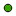
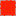

<!doctype html>
<html lang="en">
    <head>
        <meta charset="utf-8">
        <meta http-equiv="X-UA-Compatible" content="IE=edge">
        <meta name="viewport" content="initial-scale=1,user-scalable=no,maximum-scale=1,width=device-width">
        <meta name="mobile-web-app-capable" content="yes">
        <meta name="apple-mobile-web-app-capable" content="yes">
        <link rel="stylesheet" href="css/leaflet.css" />
        <link rel="stylesheet" type="text/css" href="css/qgis2web.css">
        <link rel="stylesheet" href="css/MarkerCluster.css" />
        <link rel="stylesheet" href="css/MarkerCluster.Default.css" />
        <script src="js/leaflet.js"></script>
        <script src="js/leaflet-heat.js"></script>
        <script src="js/leaflet.rotatedMarker.js"></script>
        <script src="js/OSMBuildings-Leaflet.js"></script>
        <script src="js/leaflet-hash.js"></script>
        <script src="js/Autolinker.min.js"></script>
        <script src="js/leaflet.markercluster.js"></script>
        <style>
        #map {
            width: 862px;
            height: 555px;
        }
        </style>
        <title></title>
    </head>
    <body>
        <div id="map">
        </div>
        <script src="data/json_Wards0.js"></script>
        <script src="data/json_PollingStation1.js"></script>
        <script>
        L.ImageOverlay.include({
            getBounds: function () {
                return this._bounds;
            }
        });
        var map = L.map('map', {
            zoomControl:true, maxZoom:20, minZoom:5
        }).fitBounds([[-1.89244434214,34.4401803176],[-0.147737247321,37.154003029]]);
        var hash = new L.Hash(map);
        map.attributionControl.addAttribution('<a href="https://github.com/tomchadwin/qgis2web" target="_blank">qgis2web</a>');
        var feature_group = new L.featureGroup([]);
        var bounds_group = new L.featureGroup([]);
        var raster_group = new L.LayerGroup([]);
        var basemap0 = L.tileLayer('http://{s}.tile.openstreetmap.org/{z}/{x}/{y}.png', {
            attribution: '&copy; <a href="http://openstreetmap.org">OpenStreetMap</a> contributors,<a href="http://creativecommons.org/licenses/by-sa/2.0/">CC-BY-SA</a>',
            maxZoom: 20
        });
        basemap0.addTo(map);
        function setBounds() {
        }
        function geoJson2heat(geojson, weight) {
          return geojson.features.map(function(feature) {
            return [
              feature.geometry.coordinates[1],
              feature.geometry.coordinates[0],
              feature.properties[weight]
            ];
          });
        }
        function pop_Wards0(feature, layer) {
            var popupContent = '<table><tr><th scope="row">NAME</th><td>' + (feature.properties['NAME'] !== null ? Autolinker.link(String(feature.properties['NAME'])) : '') + '</td></tr><tr><th scope="row">Party</th><td>' + (feature.properties['PolParty'] !== null ? Autolinker.link(String(feature.properties['PolParty'])) : '') + '</td></tr><tr><th scope="row">Coalition</th><td>' + (feature.properties['Coalition'] !== null ? Autolinker.link(String(feature.properties['Coalition'])) : '') + '</td></tr><tr><th scope="row">MCA</th><td>' + (feature.properties['Winner'] !== null ? Autolinker.link(String(feature.properties['Winner'])) : '') + '</td></tr></table>';
            layer.bindPopup(popupContent);
        }

        function doStyleWards0(feature) {
			switch (feature.properties['Coalition']) {
                case 'CORD':
                    return {
                    weight: '1.44',
                    fillColor: '#ffa500',
                    color: '#b2b2b2',
                    dashArray: '10,5,1,5',
                    lineCap: 'butt',
                    lineJoin: 'miter',
                    opacity: '0.7',
                    fillOpacity: '0.7',
                };
                break;

                case 'Jubilee':
                    return {
                    weight: '1.44',
                    fillColor: '#ff2200',
                    color: '#b2b2b2',
                    dashArray: '10,5,1,5',
                    lineCap: 'butt',
                    lineJoin: 'miter',
                    opacity: '0.7',
                    fillOpacity: '0.7',
                };
                break;

                case 'RBK':
                    return {
                    weight: '1.44',
                    fillColor: '#3182bd',
                    color: '#b2b2b2',
                    dashArray: '10,5,1,5',
                    lineCap: 'butt',
                    lineJoin: 'miter',
                    opacity: '0.7',
                    fillOpacity: '0.7',
                };
                break;

            }
        }
        map.createPane('pane_Wards0');
        map.getPane('pane_Wards0').style.zIndex = 601;
        var json_Wards0JSON = new L.geoJson(json_Wards0, {
            pane: 'pane_Wards0',
            onEachFeature: pop_Wards0,
            style: doStyleWards0
        });
        bounds_group.addLayer(json_Wards0JSON);
        feature_group.addLayer(json_Wards0JSON);
        function pop_PollingStation1(feature, layer) {
            var popupContent = '<table><tr><th scope="row">Name</th><td>' + (feature.properties['name'] !== null ? Autolinker.link(String(feature.properties['name'])) : '') + '</td></tr></table>';
            layer.bindPopup(popupContent);
        }

        map.createPane('pane_PollingStation1');
        map.getPane('pane_PollingStation1').style.zIndex = 602;
        function doStylePollingStation1() {
            return {
                pane: 'pane_PollingStation1',
                radius: 4.0,
                fillColor: '#38a800',
                color: '#000000',
                weight: 0.0,
                opacity: 1.0,
                dashArray: '',
                lineCap: 'butt',
                lineJoin: 'miter',
                fillOpacity: 1.0
            }
        }
        function doPointToLayerPollingStation1(feature, latlng) {
            return L.circleMarker(latlng, doStylePollingStation1())
        }
        var json_PollingStation1JSON = new L.geoJson(json_PollingStation1, {
            pane: 'pane_PollingStation1',
            onEachFeature: pop_PollingStation1,
            pointToLayer: doPointToLayerPollingStation1
            });
        bounds_group.addLayer(json_PollingStation1JSON);
        feature_group.addLayer(json_PollingStation1JSON);
        raster_group.addTo(map);
        feature_group.addTo(map);
        var baseMaps = {'OSM': basemap0};
        L.control.layers(baseMaps,{' Polling Station': json_PollingStation1JSON,'Wards<br />&nbsp;&nbsp;&nbsp;&nbsp;&nbsp; CORD<br />&nbsp;&nbsp;&nbsp;&nbsp;&nbsp; Jubilee<br />&nbsp;&nbsp;&nbsp;&nbsp;&nbsp; RBK<br />': json_Wards0JSON,},{collapsed:false}).addTo(map);
        setBounds();
        </script>
    </body>
</html>
